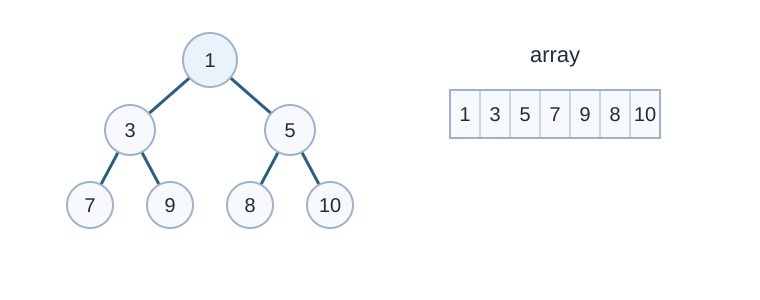

Heap
คำอธิบาย
Binary heap คือ binary tree ที่มีคุณสมบัติสองข้อ
Complete binary tree: ทุกชั้นเต็มยกเว้นชั้นล่างสุด ซึ่งเติมจากซ้ายไปขวา
Heap property: ใน min-heap ทุก node มีค่า \leq ลูกของตัวเอง ค่าน้อยสุดจึงอยู่ที่ root เสมอ (max-heap กลับกัน ค่ามากสุดอยู่ที่ root)
Heap ไม่ได้เรียงทั้งหมด รู้แค่ว่า root เป็นค่าน้อยสุด ซึ่งพอสำหรับงานที่ต้องดึงค่าน้อยสุดออกซ้ำ ๆ และทำให้ทุก operation เร็ว

Min heap and array representation. Original diagram for this guide.
เก็บใน array
เพราะเป็น complete tree จึงเก็บใน array ได้พอดีโดยไม่มีช่องว่าง เรียงทีละชั้นจากซ้ายไปขวา ถ้าเริ่ม index ที่ 0
ลูกซ้ายของ i คือ 2i + 1 และลูกขวาคือ 2i + 2
parent ของ i คือ \left\lfloor \frac{i - 1}{2} \right\rfloor
ความสูงของ heap ที่มี n node คือ \left\lfloor {\log_{2}n} \right\rfloor ทุก operation ที่เดินตามความสูงจึงเป็น O\left( \log n \right)
Operations (min-heap)
Insert: sift up
ใส่ค่าใหม่ที่ช่องท้ายสุดของ array (รักษาความเป็น complete tree) แล้ว ลอยขึ้น (sift up): ถ้าน้อยกว่า parent ให้สลับ ทำซ้ำจนไม่น้อยกว่า parent หรือถึง root
Extract min: sift down
นำ root ออก แล้วย้ายตัวสุดท้ายขึ้นมาเป็น root แทน จากนั้น จมลง (sift down): สลับกับ ลูกที่น้อยกว่า ถ้าลูกนั้นน้อยกว่าตัวเอง ทำซ้ำจนไม่มีลูกที่น้อยกว่า
ต้องสลับกับลูกที่ น้อยกว่า เพราะตัวนั้นจะขึ้นมาเป็น parent ของอีกลูกหนึ่ง ถ้าเลือกลูกที่มากกว่าจะผิด heap property
ลอง insert ค่าต่าง ๆ และ extract min แล้วกด “ขั้นถัดไป” เพื่อดูการสลับทีละขั้น สังเกตว่าตำแหน่งใน tree และใน array ตรงกันอย่างไร
Operation |
เวลา |
|---|---|
ดูค่าน้อยสุด ( |
O(1) |
insert ( |
O\left( \log n \right) |
extract min ( |
O\left( \log n \right) |
สร้าง heap จาก array n ตัว (heapify) |
O(n) |
Implementation
vector<int> h; // min-heap, index เริ่มที่ 0
void push(int x) {
h.push_back(x);
int i = h.size() - 1;
while (i > 0) {
int p = (i - 1) / 2;
if (h[p] <= h[i]) break;
swap(h[p], h[i]); // sift up
i = p;
}
}
int pop() { // คืนและลบค่าน้อยสุด (สมมติว่า heap ไม่ว่าง)
int top = h[0];
h[0] = h.back();
h.pop_back();
int i = 0, n = h.size();
while (true) {
int l = 2 * i + 1, r = 2 * i + 2, c = i;
if (l < n && h[l] < h[c]) c = l;
if (r < n && h[r] < h[c]) c = r; // c = ตัวที่น้อยสุดในสามตัว
if (c == i) break;
swap(h[i], h[c]); // sift down
i = c;
}
return top;
}Heap sort
Push ทุกค่าลง heap แล้ว pop ออกทีละตัว จะได้ค่าเรียงจากน้อยไปมาก ใช้เวลา O\left( n\log n \right)
ใช้ใน STL
ในการแข่งขันใช้ priority_queue ซึ่งเป็น heap สำเร็จรูป
(ค่าเริ่มต้นเป็น max-heap) รายละเอียดอยู่ในบท Priority Queue
priority_queue<int> maxHeap;
priority_queue<int, vector<int>, greater<int>> minHeap;ลองคิด
ใน min-heap ค่ามากสุดอยู่ที่ไหนได้บ้าง
ถ้า insert 5, 3, 8, 1 ลง min-heap ว่างตามลำดับ array สุดท้ายเป็นอย่างไร (ตรวจด้วย widget ได้)
เฉลย
อยู่ที่ใบ (leaf) ตัวใดตัวหนึ่ง เพราะ node ที่มีลูกต้องน้อยกว่าหรือเท่ากับลูก จึงตรวจแค่ครึ่งหลังของ array ก็พอ
1 3 8 5: insert 3 สลับกับ 5, insert 8 อยู่ที่เดิม, insert 1 ลอยขึ้นผ่าน 5 และ 3 จนถึง root
โจทย์ฝึกฝน (Practice Problems)
ลองทำโจทย์เหล่านี้จาก CSES Problem Set เพื่อฝึกใช้ทักษะจากบทนี้ โดยเริ่มจากโจทย์ที่ง่ายที่สุดก่อน
Room Allocation (min-heap ของเวลาที่ห้องว่าง)
Sliding Window Median (ท้าทาย: ใช้ heap สองตัว)
โจทย์เพิ่มเติม: CSES Problem Set และ programming.in.th